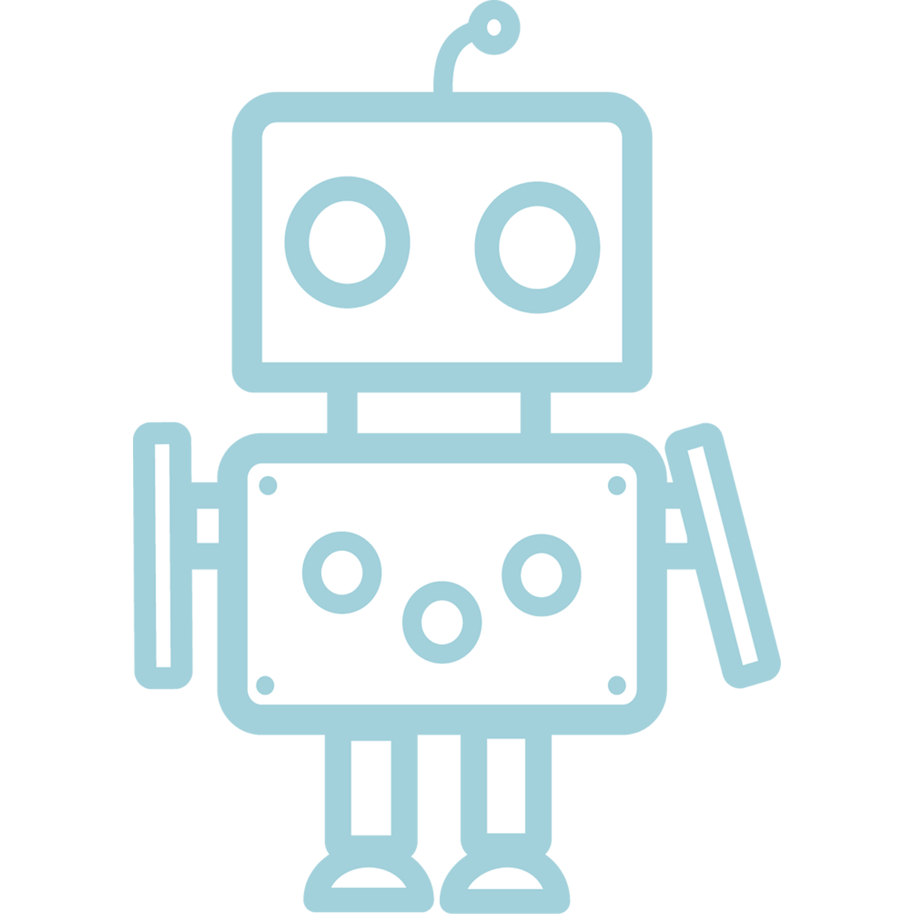
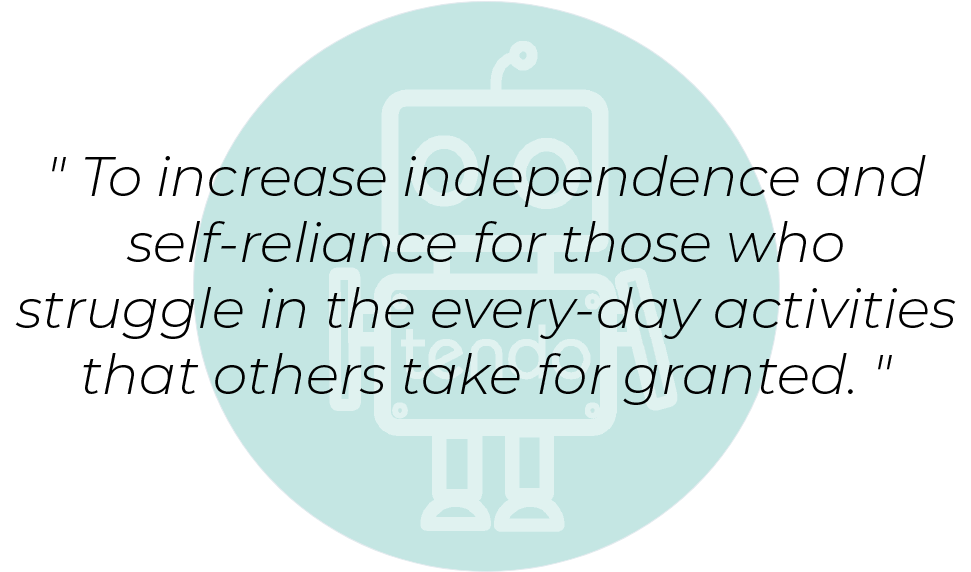

HVAD ER TENDO?
Tendo er et blødt robotskelet, som går ind og styrker dig i hverdagens udfordringer. Forestil dig en robothandske, som ved hjælp af bløde kunstige sener og sensorer, kan mærke hvornår du har brug for ekstra styrke i hverdagen. Tendo-handsken er udviklet specielt til dig og dine behov. Handsken dækker derfor kun din tommelfinger, pegefinger og underarm, så den fylder så lidt som muligt på din arm. De eneste tanker du skal gøre dig med handsken på, er blot hvilken sodavand du skal skrue låget af, eller hvilken som helst anden hverdags problematik.
Vi har skabt Tendo til dig, så du kan nyde en større uafhængighed af andre. Din tidligere afhængighed kan skyldes f.eks. gigt, en skade, blodprop, slagtilfælde eller alder. Følgerne af disse sygdomme, kan oftest kræve mange ressourcer, både fra pårørende og samfundet. Dette har måske medvirket til lavere selvværd eller et forringet syn på dig selv. Derfor har vi skabt Tendo-handsken, så du kan få genopbygget din indre styrke og nyde dagligdagen igen.

Blødt og bevægeligt skellet
Ny intelligent robotteknologi gør, at sensorer kan registrere og styrke dine muskler.
To fingre
Mere kræver det ikke, når du bruger Tendo-handsken. Der er tænkt på dig, så handsken vejer lidt, den fylder ikke meget og alle unødvendige elementer er skåret fra.

En handske til dig
.. ikke kun til dine symptomer. Formålet med handsken er den skal føles som en del af dig. Handsken er i konstant udvikling og under mange brugertest. Du vil opleve, handsken passer dig, og er til gavn, i hverdagssituationer.
FOLKET BAG
SOFIE WOGE
FOUNDER og CEO
JOE SARAWUT NIELSEN
DESIGN ENGINEER
Vores formål med Tendo, er at skabe frihed og åbne nye muligheder for dem, der ikke vil gå på kompromis, med de begrænsninger de er blevet sat sig. Folk uden nedsat funktionsevne, kan hurtigt tage små hverdagsting for givet, såsom at kunne bruge en gaffel på en restaurant eller åbne en flaske vand. Tendo går ind og skaber kunstig styrke i din hænder og gør det muligt for dig, at få greb om alverdens ting. Dette er noget, som medicinsk udstyr ikke kan hjælpe med, på samme måde som Tendo.
Da Tendo stadig er under udvikling, vil flere oplysninger komme følgende.
VORES HISTORIE
Vores formål med Tendo, er at skabe frihed og åbne nye muligheder for dem, der ikke vil gå på kompromis, med de begrænsninger de er blevet sat sig. Folk uden nedsat funktionsevne, kan hurtigt tage små hverdagsting for givet, såsom at kunne bruge en gaffel på en restaurant eller åbne en flaske vand. Tendo går ind og skaber kunstig styrke i din hænder og gør det muligt for dig, at få greb om alverdens ting. Dette er noget, som medicinsk udstyr ikke kan hjælpe med, på samme måde som Tendo. Da Tendo stadig er under udvikling, vil flere oplysninger komme følgende.

VORES MISSION
